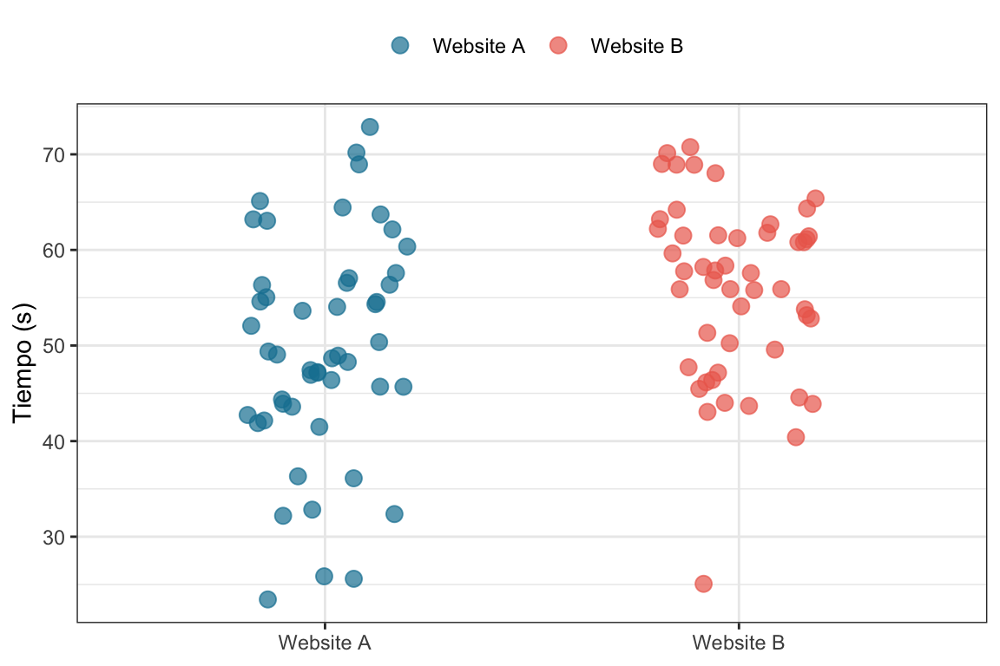

En los experimentos aleatorios1 los sujetos son asignados a los grupos (por ejemplo, tratamiento y control) aleatoriamente. Esto significa que en la asignación de los grupos aleatorios hay involucrado un proceso realmente aleatorio, como arrojar un moneda. Ojo con confundir el concepto de asignación aleatoria con el de muestra aleatoria: Que el muestreo sea aleatorio significa que los participantes son una muestra seleccionada al azar de una población más amplia, mientras que la asignación aleatoria significa que los participantes, independientemente de si fueron seleccionados de una población más amplia o no, son asignados al azar a diferentes condiciones experimentales.
Cuando hablamos de un evento aleatorio, hablamos de una entidad abstracta cuyo resultado no se puede predecir exactamente. Para poner este tipo de eventos en el mundo real solemos hechar mano de ejemplos clásicos que involucran una complejidad fìsica tal que resulta imposible predecirlos exactamente, como arrojar un dado o una moneda. El ejemplo de la moneda es la forma más usual de hablar de una variable aleatoria con dos posibles valores equiprobables (aunque parezca que no tanto (Bartoš et al. 2023)). Sin embargo, esta aleatoridad es muy costosa de reproducir. Es por eso que las computadores utilizan lo que se llama generadores de números pseudo aleatorios2. Estos generadores utilizan series de números generados de forma pseudo aleatoria pero que puede ser recuperada determinìsticamente a partir de una “semilla”. Es por eso que cuando simulamos datos en este libro lo primero que hacemos es ejecutar set.seed(42) (42 o el número que sea), para de esa forma poder obtener el mismo resultado cada vez que replicamos, o el lector quiere replicar, las simulaciones.
Dicho esto. A fines prácticos, es totalmente razonable utilizar un generador de números pseudo aleatorios para la asignación a grupos experimentales en los experimentos aleatorios.
Bartoš, František, Alexandra Sarafoglou, Henrik R Godmann, Amir Sahrani, David Klein Leunk, Pierre Y Gui, David Voss, et al. 2023. «Fair coins tend to land on the same side they started: Evidence from 350,757 flips». arXiv preprint arXiv:2310.04153.
Por ejemplo, en el caso más simple, esto significa que dada una muestra de personas, vamos a asignar a cada de una de ellas “tirando una moneda” al grupo control (\(D=0\)) o tratamiento (\(D=1\)) como se ve en la siguiente figura.
Los experimentos aleatorios son el gold-standard para estimar el efecto de un tratamiento. De hecho, al ser la asignación aleatoria, podemos asegurar que, como mencionamos en el capítulo Capítulo 3, existe independencia (\((Y^0, Y^1) \perp D\)). Esto nos asegura que la diferencia de medias de los grupos tratamiento y control son un estimador consistente del ATE. Dicho esto, veremos que hay formas más “eficientes” de estimar el ATE, es decir, con mayo potencia estadística.
Hay una razón extra para que en este libro empecemos hablando en detalle de los experimentos aleatorizados, y es que cuando entremos de lleno en el mundo de los cuasiexperimentos nos será de gran ayuda entender cuál es el problema y cuál es la solución que se propone. Esto nos va a permitir tener una idea más concreta de las ventajas y limitaciones de cada uno de los diseños cuasiexperimentales que vamos a estudiar más adelante.
Dicho esto volvamos al maravilloso mundo de los üåàexperimentos aleatorizados idealesüåà.
5.2 El experimento ideal
El experimento ideal es ese experimento tan bien planificado, tan bien implementado y tan bien acatado por sus participantes que en la realidad nunca ocurre. Sin embargo, hay una excepción y son, en general, los medical trials. De hecho hay algunas características que esperaríamos ver en un RCT y son las siguientes.
Controles adecuados: Si diseñamos un experimento para estimar el efecto de un tratamiento, debemos tener un grupo control adecuado con el que comparar. Por ejemplo, . Sin embargo, esto no significa que el grupo control sea siempre un grupo simplemente no expuesto al tratamiento. Por ejemplo, es muy conocido el ejemplo de la determinación de la efectividad de un fármaco, en los que al grupo control se le ofrece una pastilla que no contiene a la droga siendo estudiada sino unas pastilla de igual forma, tamaño y prescripción de consumo pero, típicamente, de azucar. Esto lo que nos permite es poder descontar el efecto de consumir un placebo en la estimación final de la efectividad del fármaco3.
Asignación aleatoria a los grupos experimentles: Como vimos en el capítulo Capítulo 3, la mejor forma de asegurar que los grupos control y tratamiento son lo más iguales posibles es asignando aleatoriamente a los participantes. Esto, junto con una cantidad de participantes suficiente nos asegura que ambos grupos son iguales en todos los factores que pueden influenciar el resultado del experimento, incluyendo los factores de los que no sabemos.
Los individuos deben ser considerados en el grupo asignado: Los participantes asignados al grupo tratamiento deben ser considerados como tratamiento, independientemente de si se expusieron o no al mismo. Esto es conocidocomo el principio intention to treat y puede sonar un poco raro. Sin embargo, lo podemos pensar como un cambio del tratamiento que queremos evaluar. Por ejemplo, hay un experimento en el que se quiere evaluar el efecto de la estatinas en el colesterol LDL. Hay un grupo al que le dan estatinas y otro grupo al que le dan un placebo. Un \(18%\) de los que fueron originalmente asignados al grupo estatinas dejó de tomarlas y un \(38%\) de los que fueron asignados al grupo placebo empezó a tomar estatinas durante el trial. Esto significa que nuestro experimento no estimaría correctamente el efecto de tomar las estatinas, pero por otro lado, sí estimaría bien el efecto de ser recetado con estatinas. Y si lo pensamos un poco: ¿No es algo más razonable estimar el efecto de lo segundo?
Blinded: Para que las estimaciones de un experimento no se contaminen, resulta necesario que los participantes (o unidad experimental) no conozcan a que grupo experimental pertenecen. Esto es importante porque podría haber algún tipo
Medir a todos los individuos: Todos los individuos que comenzaron el experimento deben ser medidos para evaluar el efecto del tratamiento. Esto no siempre pasa y es algo de lo que vamos a hablar más adelante en este capítulo.
Que lindo es el diseño experimental. Todos somos felices, todo funciona. ¿El libro debería terminar acá?
Pues no mi ciela. Ojalá llevar adelante experimentos fuera tan fácil.
5.3 Cuando la cosa no es tan ideal
5.3.1 Aleatorización por bloques
Por ejemplo, se quiere testear la ventaja de una intervención laparoscópica sobre una cirugía tradicionales. Es razonable pensar que los cirujanos se vuelven mejores con el tiempo, por eso no es razonable separar todos los pacientes de una, sino más bien por bloques temporales.
5.3.2Spillover
El concepto de spillover
5.3.3 Reversión de la cadena causal (o reverse causation)
Donde \(T_i\) es una variable indicadora que toma el valor \(1\) si el participante pertenece al grupo tratamiento y el valor \(0\) si no.
5.4.2Pretest-posttest
5.5 Diseños clúster
Los diseños clúster son una forma de diseño experimental donde los sujetos son asignados a grupos (clústeres) y luego se asignan tratamientos a esos grupos. Este enfoque es útil cuando no es práctico o posible asignar tratamientos a individuos de manera independiente.
Las ventajas de los diseños cluster son varias:
A veces puede resultar más práctico o conveniente asignar aleatoriamente a grupos que a individuos. Por ejemplo, en el sistema escolar nos pueden permitir asignar cursos o escuelas a distintos tratamientos pero no a estudiantes
La aleatorización a nivel clúster puede ser útiles para minimizar los efectos de difusión, imitación de tratamientos u otros problemas de adherencia. Por ejemplo, para un estudiante es más difícil ser crossover si el tratamiento diferente lo tienen en otro aula o escuela en lugar de su compañero de banco.
Pueden ser necesarios para evitar los spillovers. En el estudio de la campaña de SMSs para mejorar la tasa de vacunación contra el HPV hubieran hecho la aleatorización a nivel barrio o cioudad, no hubieran tenido el spillover debido a que un vecino te comenta del SMS que recibió.
Pueden ser necesarios para evitar las externalidades. Por ejemplo, si se está haciendo un experimento para evaluar el efecto de un tratamiento dentro de un determinado grupo cerrado (una ciudad), el aumento de empleabilidad para el grupo tratamiento puede generar que haya menos empleos disponibles para el grupo control y que baje su tasa de empleo, no como consecuencia de ser menos “empleables”. Aleatorizando por ciudad se puede reducir este efecto.
Algunos programas se aplican sí o sí a grupos. Por ejemplo, una campaña mediática, una terapia de grupo o un cambio de política a nivel escuela.
Todo parece ideal, ¿No? Pero nada de esto viene sin un costo. En general el costo es la potencia estadística. Es decir, para tener la misma potencia estadística que aleatorizando a nivel de individuo, vamos a necesitar más (y a veces muchos más) sujetos experimentales divididos en grupos. Más de eso en la sección que sigue.
5.5.1 Análisis de datos jerárquicos
Para analizar este tipo de datos utilizamos modelos estadísticos que tienen en cuenta la estructura jerárquica de los datos. En este libro los vamos a llamar de forma general modelos jerárquicos4. A continuación tenemos la estructura de un modelo lineal jerárquico con un sólo nivel de agrupamiento5.
Donde tanto \(r_j\) como \(\epsilon_{ij}\) tiene esperanza cero y varianza \(\sigma^2_{inter-clúster}\) y \(\sigma^2_{intra-clúster}\) respectivamente. En la ecuación anterior \(T_j\) es una variable indicadora que toma el valor \(1\) si la escuela, y no el participante como antes, pertenece al grupo tratamiento y el valor \(0\) si no. De esta forma, si la escuela pertenece al grupo tratamineto su media será \(\mu_{j|D_j=1} = \beta_0 + \beta_T + r_j\) mientras que si pertenece al grupo control será \(\mu_{j|D_j=0} = \beta_0 + r_j\), y la esperanza de la diferencia entre ambas (dado que la esperanza de \(E(r_j)=0\)) será justamente la magnitud del efecto del tratamiento \(\beta_T\).
5.5.2 La potenncia y la correlación intraclase (ICC)
donde \(\sigma^2_{inter-clúster}\) es la varianza entre clústers, es decir, cuánto se varían las medias de los clústers entre clústers, y \(\sigma^2_{intra-clúster}\) es la varianza dentro de los clústers, es decir, cuánto varías las mediciones de cada individuo dentro de cada clúster.
Como mencionamos anteriormente, la aleatorización a nivel de clúster tiene su costo. Si los outcomes dentro de cada clúster están altamente correlacionados y la magnitud de los resultados varía considerablemente entre clústers, entonces es probable que los participantes dentro de un mismo grupo tengan resultados similares, y el ICC será alto. En estos casos, los datos provenientes de un individuo aportan casi tanta información como si se incluyera a todos los miembros. Por lo tanto, el tamaño muestral efectivo se aproxima más al número de clústers que al tamaño total de la muestra de individuoos.
Pasando en limpio. Si los clústers son más similares entre sí, el modelo estadístico será más potente, con un tamaño de muestra efectivo cercano a la cantidad de individuos mientras que si los clústers difieren mucho entre sí la potencia estadística cae, aproximándonos a un tamaño de muestra efectivo igual a la cantidad de clústers.
Es por esto último que en la práctica siempre conviene agergar más clústers que individuos6. Pero claro, eso es lo que suele ser más costoso.
# Data jerárquicaset.seed(42)n_escuelas <-40# Supongamos que tengo n_escuelas escuelas, cada una de ellas tiene una media de la calificacion de nota de matemáticamu_j <-rnorm(n_escuelas, 50, 5)# Las primera 3 son asignadas al grupo tratamiento y las otrasa tres al grupo controld <-c(rep("Tratamiento", n_escuelas/2), rep("Control", n_escuelas/2))# El efecto del tratamiento es 10, entonces a la media de cada escuela que pertenece al grupo tratamiento# le sumamos 10beta_T <-10# Armo un tibble con las escuelasescuelas <-tibble(tratamiento = d, media = mu_j) |>mutate(media =if_else(tratamiento =="Tratamiento", media + beta_T, media)) # Graficamos los promedios de las escuelasescuelas |>ggplot(aes(x = tratamiento, y = media,color = tratamiento)) +geom_jitter(size =2, alpha = .6,width = .2) +scale_color_manual(values =c("#1380A1", "#ED6A5A")) +labs(color =NULL, x =NULL, y ="Media de la escuela j") +theme_bw() +theme(legend.position ="top")

Como era esperable, las medias de las escuelas en el grupo tratamiento están por encima de las medias en el grupo control. Sin embargo, hay escuelas para las que esto no es así. Es por eso que es muy importante modelar a la escuela (el clúster) como una posible fuente de variabilidad.
# Data jerárquica# Ahora vamos a muestrear 20 estudiantes en cada escuela, con media mu_j y un sigma de 10alumnos <-tibble(tratamiento =rep(d, each =20), order =rep(1:n_escuelas, each =20),escuela =rep(paste("Escuela", 1:n_escuelas), each =20),media =rep(mu_j, each =20)) |>mutate(media =if_else(tratamiento =="Tratamiento", media + beta_T, media)) |>rowwise() |>mutate(Yij =rnorm(1, media, 10)) |>select(-media)# Graficamos los promedios de las escuelasalumnos |>ggplot(aes(x =fct_reorder(escuela, desc(order)), y = Yij,color = tratamiento)) +geom_jitter(size =1, alpha = .6,width = .2) +scale_color_manual(values =c("#1380A1", "#ED6A5A")) +labs(color =NULL, x =NULL, y ="Yij") +coord_flip() +theme(legend.position ="top")
Acá vemos que a la variabilidad de las escuelas se suma la variabilidad de los sujetos.
Ahora vamos a tratar de recuperar el tamaño del efecto ajustando un modelo lineal de efectos mixtos7.
7 Sin entrar en demasiado detalle, un modelo lineal de efectos mixtos tiene en cuenta la estructura jerarquica del efecto. En este caso en particular vamos a permitirle al modelo que el punto medio de cada colegio sea considerado un factor aleatorio.
# Data jerárquicaset.seed(12)n_escuelas <-100betalmer <-c()beta_T <-10d <-c(rep("Tratamiento", n_escuelas/2), rep("Control", n_escuelas/2))for (i in1:1000) { mu_j <-rnorm(n_escuelas, 50, 5) alumnos <-tibble(tratamiento =rep(d, each =20), escuela =rep(paste("Escuela", 1:n_escuelas), each =20),media =rep(mu_j, each =20)) |>mutate(media =if_else(tratamiento =="Tratamiento", media + beta_T, media)) |>rowwise() |>mutate(Yij =rnorm(1, media, 10)) |>select(-media) mlmer <-lmer(Yij ~ tratamiento + (1|escuela), data = alumnos) betalmer <-c(betalmer, fixef(mlmer)[2])}betas <-tibble(betalmer = betalmer)mean_beta <- betas |>summarise(m_beta =mean(betalmer))betas |>ggplot(aes(x = betalmer)) +geom_histogram(fill ="#1380A1", alpha = .6,bins =30) +geom_vline(xintercept = mean_beta$m_beta, color ="#1380A1", linewidth =1) +geom_label(data = mean_beta,aes(label =paste("Efecto promedio =", round(m_beta,2))),x =10, y =50) +labs(x ="Estimación del efecto del tratamiento",y =NULL) +theme_bw()
Vemos que si hacemos un histograma de todas las estimaciones del parámetro en base a las \(1000\) simulaciones de los datos, el promedio es 10.02, un valor bastante cercano al valor real de \(10\)8. Ahora sí nos podemos quedar tranquilos.
8 Recordemos que en la práctica nunca vamos a conocer el valor real del parámetro y que esa es un ventaja que sólo tenemos en estos casos en los que simulamos “muestras” a partir de valores conocidos de los parámetros.